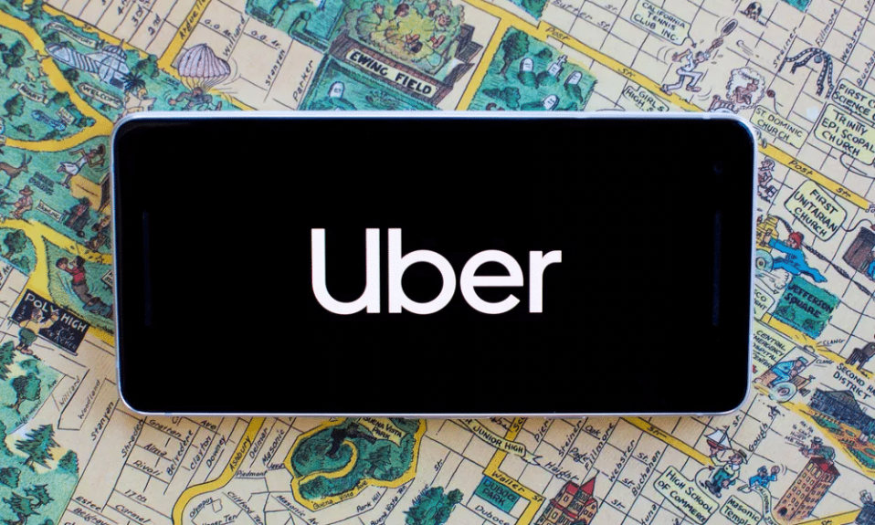
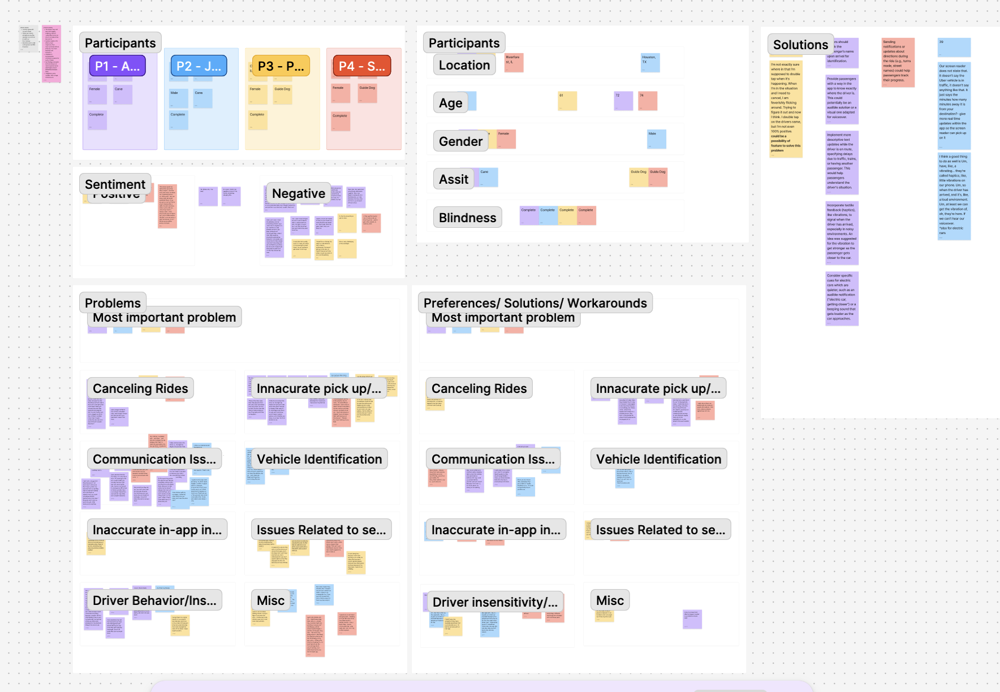

Improving the Rideshare Experience
of Users Who Are Blind or Have Low Vision
A qualitative research study exploring the barriers BLV individuals face when using Uber, and co-designing solutions to make rideshare more equitable for everyone.
Project Overview
The brief
My Role
UX Researcher & Co-author
Methods
In-depth Interviews, Qualitative Analysis, Co-design
Tools
Zoom, NotebookLM, FigJam
Focus Area
Accessibility, Inclusive Design, Transportation
Ridesharing apps like Uber and Lyft promise independence and mobility — but for users who are blind or have low vision (BLV), the reality is often far more complicated. Despite relying on these services more heavily than sighted users, BLV passengers face systemic barriers that existing research had not fully addressed with actionable solutions.
This study set out to change that. Through in-depth interviews with four completely blind Uber users, we surfaced the real friction points in their rideshare experience — and worked with participants directly to co-design solutions that could meaningfully improve their journeys.
Methodology
How we approached this
Literature Review
Surveyed existing research on BLV rideshare experiences, identifying gaps where actionable solutions were lacking — particularly around driver behaviour, pick-up logistics, and app accessibility.
Participant Recruitment
Recruited four participants who were completely blind, had used Uber within the past five months, and lived in the Chicagoland area or nearby. All participants were compensated for their time.
In-depth Interviews via Zoom
Conducted one-hour virtual interviews per participant, using a pre-written script for consistency. Two moderators per session — one leading, one observing and taking notes.
Qualitative Analysis with Loose Coding
Transcribed all sessions, then used NotebookLM for initial loose coding. Organised codes into thematic buckets on FigJam, followed by a second manual analysis to draw conclusions.
Co-design Sessions
Invited participants to brainstorm solutions to their biggest pain points collaboratively, ensuring the resulting recommendations reflected real user needs rather than assumptions.
Who We Spoke To
Our participants
Participant 01
72-year-old woman · Chicago, IL
Completely blind · Cane user
Primary app: Uber
Participant 02
39-year-old man · Houston, TX
Completely blind · Cane user
Primary app: Uber
Participant 03
61-year-old woman · Chicago, IL
Completely blind · Guide dog user
Primary app: Uber
Participant 04
74-year-old woman · River Forest, IL
Completely blind · Guide dog user
Primary app: Uber
All four participants used Uber as their primary rideshare service, often at a subsidised cost through government assistance programmes. Despite this cost benefit, each had significant accessibility challenges that affected their safety, confidence, and independence.
Data Analysis
Affinity mapping
After transcribing all four interviews, we used NotebookLM for loose coding to surface recurring themes, then organised codes into buckets on FigJam. The affinity map below shows how participant data was clustered — from demographics and sentiment to specific problem areas and co-designed solutions.

Research Findings
Three major challenge areas
Across all interviews, three interconnected challenge categories emerged. Each one eroded participants' sense of safety, trust, and independence in different but compounding ways.
Communication Breakdown
Drivers who didn't speak English, who communicated nothing at all, or who cancelled without reason left participants stranded — sometimes in dangerous situations. Six consecutive cancellations in the rain was one participant's reality.
Pick-Up & Drop-Off Failures
Drivers expected BLV passengers to visually locate them. They honked instead of speaking, asked riders to describe building colours, and frequently dropped passengers at incorrect locations — insisting it was the right place.
Driver Insensitivity & Discrimination
Participants were yelled at, sworn at, and discriminated against for having guide dogs. Over 83% of guide dog users nationally report being denied rideshare access — a crisis of compliance with accessibility law.
App Accessibility Gaps
Screen readers encountered unlabeled buttons that read only "button, button, button." GPS-based location cues were visually displayed but not conveyed to assistive technologies. The ride cancellation button was difficult to find.
"I've had drivers show up and not speak at all. They just pull up and don't speak — they assume that I see them. I want them to know what I need from them. I need them to speak."
Participant 03, Chicago"There's some issues on the app where it'll just say button, button, button and it's not clear on what it is — so their app should be labeled better."
Participant 03, on Uber's screen reader compatibilityCo-designed Solutions
What participants designed
Rather than imposing solutions, we invited participants into the design process. The four features below emerged directly from collaborative brainstorming sessions with the people most affected.
Haptic Proximity Feedback
Phone vibrations that gradually intensify as the driver approaches — providing a spatial, non-visual signal that works even in loud environments where VoiceOver can't be heard. Particularly valuable at crowded pick-up points like hospitals or transit hubs.
En Route Audio Notifications
Spoken updates throughout the trip — announcing passing landmarks, turns, and major streets — so passengers feel informed and confident they're heading to the right place without relying on a driver who may not communicate.
Frequent Pre-Pickup Updates
More granular status updates while a driver is en route — including contextual messages like "stuck in traffic" or "delayed by train." Participants described wanting to know not just minutes away, but why — especially when the countdown stalls unexpectedly.
Mandatory Accessibility Training
Structured training for drivers on how to assist passengers with visual impairments — including verbal communication standards at pick-up, guide dog etiquette, and legal obligations. Recommended by three of four participants as the single highest-impact change.
Recommendations
What we recommend
Implement Automated Messaging & Communication Features
Build transparency into every stage of the ride — from en route updates and pre-pickup status messages to haptic arrival cues. Automation reduces dependence on individual driver behaviour, creating a more reliable baseline experience for BLV passengers.
Provide Additional Support, Services & Training for Drivers
Driver training must address disability discrimination, guide dog accommodation (a legal requirement), and standardised pick-up and drop-off procedures for BLV passengers. Include translation support for language barriers. The variability in driver behaviour is a systemic problem — and training is a systemic solution.
Commission a Formal Accessibility Report for the Uber App
Unlabeled buttons, poor screen reader compatibility, and a difficult-to-find cancellation flow are symptoms of an app that hasn't been rigorously tested with assistive technology users. A formal accessibility audit would identify and prioritise the most impactful UI changes — benefiting millions of users globally.
The curb-cut effect at work
Every solution we co-designed with BLV participants would also benefit sighted riders. Automated status updates reduce anxiety for everyone. Driver training creates more empathetic service across the board. Easier cancellation flows help all users. Accessibility isn't a niche concern — it's a design quality that lifts the whole experience.
Reflection
What I learned
This project deepened my understanding of what it means to design with people, not just for them. Co-design sessions with participants produced more specific, more feasible, and more nuanced solutions than anything we could have generated independently — because the people who live these challenges every day know exactly where the system is failing.
I also came away with a sharper appreciation for how structural inequity shows up in product design. The barriers BLV passengers face with Uber aren't edge cases — they're the result of design decisions that defaulted to sighted users as the norm. Making the invisible visible in this research felt like exactly the kind of work UX should be doing more of.
If I were to extend this study, I'd want to conduct a comparative analysis between Uber and Lyft — Lyft's accessibility-forward guidance for drivers may translate to measurably different passenger experiences, and that insight could be powerful advocacy material for both platforms.
Want to see more?
Explore other projects in my portfolio, or get in touch to talk research, collaboration, or anything in between.